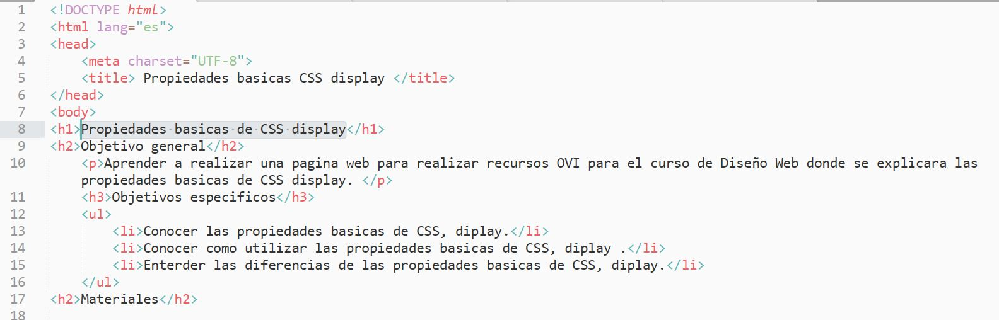

CONCEPTOS PROPIEDADES BASICAS DEL CSS DISPLAY
HTML: Es un lenguaje de etiquetas para construir paginas WEB, las etiquetas son palabras claves que se escriben la la mitad del signo mayor (<) y signo menor (>).
Documento HTML: Es un arvios de texto, que se realiza por medio de un editor de tecto, como block de notas, Sublime y cualquier otro procesador de texto, donde el archivo se gurada con la extención .html.
Propiedad display: Permite mostrar y ocultar la forma en que deseamos como aparece los menus, si queremos que se muestre en ventanas pequeñas del navegador o en lineas en ventenas mas grandes del tamaño de la ventana del navegador, esto ayudara a tener una pagina web mas dinamica.
CSS: Es una de las mas complejas ya que establece el tipo de caja que genera cada elemento, la propiedas mas sencilla es el none ya que hace que no se visualice caja.
 alt="HTML">
Gauchat, J. D. (2012). books.google. Obtenido de books.google: https://books.google.es/books?hl=es&lr=&id=szDMlRzwzuUC&oi=fnd&pg=PA1&dq=Propiedades+b%C3%A1sicas+de+CSS,+Display:&ots=0ClIU1pyNi&sig=yTL_6KIZqxJTVkVBLjECdBdzLbk#v=onepage&q=Propiedades%20b%C3%A1sicas%20de%20CSS%2C%20Display%3A&f=false